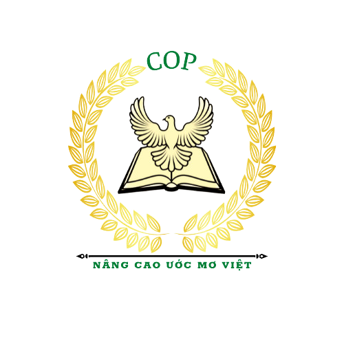

COP - Chương Trình Định Hướng Nghề Nghiệp
TRẮC NGHIỆM ĐỊNH HƯỚNG NGHỀ NGHIỆP
Nếu dùng một câu để miêu tả về mình, bạn sẽ ?
Nói nhiều hơn là nghe người khác nói
Lắng nghe người khác nhiều hơn là nói
Thường chú ý đến những vấn đề tiểu tiết
Để ý những vấn đề khái quát và dự đoán những việc có thể xảy ra
Đánh giá và đưa ra mọi quyết định một cách khách quan
Quyết định vấn đề theo cảm nhận chủ quan và giá trị riêng của nó
Thực hiện đúng kế hoạch đặt ra, không muốn thay đổi, nhiều khi hơi cứng nhắc
Linh hoạt khi thực hiện các kế hoạch và giải quyết mọi vấn đề phát sinh
Trong những buổi họp mặt hay tranh luận cùng bạn bè, bạn thường?
Muốn mình là tâm điểm của mọi sự chú ý
Bạn chỉ thấy thoải mái khi được ở một mình mà thôi
Thích nghe những vấn đề cũng như giải pháp gắn với thực tế, không viển vông
Thích những ý tưởng sáng tạo
Tranh luận cho vui
Cố gắng tránh phải tranh luận và đối đầu với mọi người chỉ vì bất đồng quan điểm
Luôn chú ý đến thời gian, đúng giờ đã hẹn
Thường trễ hẹn, không mấy quan tâm đến giờ giấc
Quan điểm sống của bạn là gì?
Hành động trước khi suy nghĩ
Suy nghĩ thật kỹ trước khi hành động
Chỉ tin vào kinh nghiệm đã có trong thực tế
Tin vào bản thân, bản năng mà thôi
Luôn đề cao tính trung thực và công bằng
Đề cao sự hòa thuận
Làm trước, chơi sau
Ưu tiên chơi trước đã
Trong công việc, bạn?
Luôn thích đóng vai trò chủ đạo, để mọi người nhìn thấy tầm quan trọng của mình
Không thích phô trương, thường ẩn mình và làm việc chăm chỉ
Chú ý mọi chi tiết và nhớ tất cả sự việc đã xảy ra
Chỉ quan tâm đến những vấn đề mới lạ
Lấy thành tích làm động lực để phấn đấu và nỗ lực hơn
Vui khi được sếp khen
Không quá khó khăn khi đưa ra quyết định
Thật khó để đưa ra quyết định cuối cùng
Nhìn chung về tính cách, bạn là có khuynh hướng?
Thoải mái và nhiệt tình
Độc lập và kín đáo
Có óc thực tế, nhìn thấy sự thực diễn ra và sẵn sàng chấp nhận
Có đầu óc sáng tạo, thấy trước những việc có thể làm
Thường bị thuyết phục bởi những lập luận có lý của người khác
Có lúc bị cảm xúc cá nhân đánh lừa
Thích mọi thứ rõ ràng, và chỉ yên tâm khi có kế hoạch cụ thể
Thích sự tự do
Kết quả của bạn
×